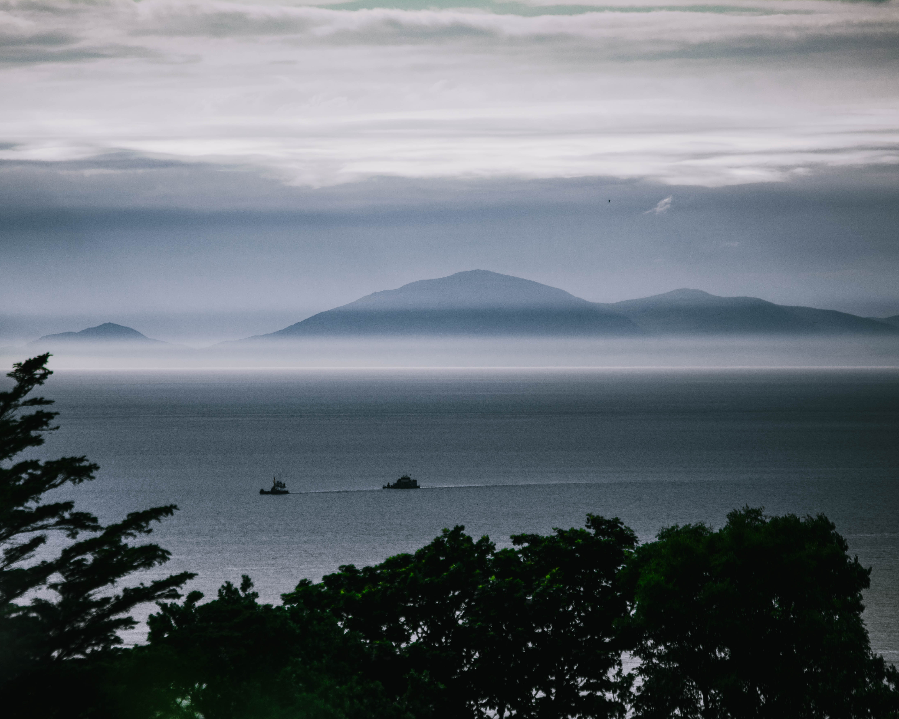
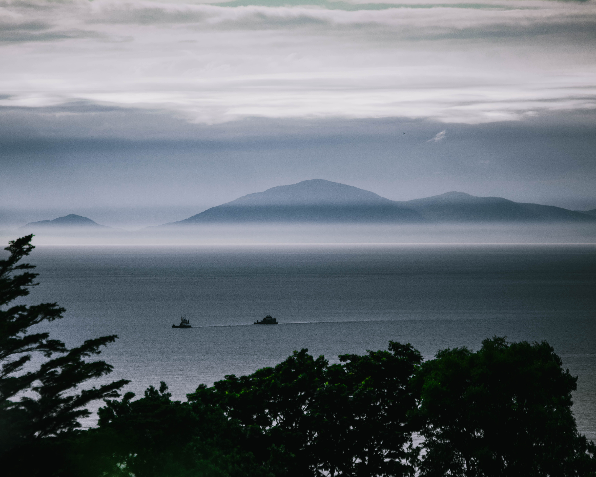

The United Kingdom is a land of contrasts, where ancient traditions meet modern innovation against a backdrop of stunning landscapes and vibrant cities. From the historic streets of London, where iconic landmarks like Big Ben and the Tower of London stand tall, to the rugged beauty of the Scottish Highlands and the picturesque villages of the Cotswolds, the UK offers something for every traveler. Explore the rich history and culture of Wales, with its majestic castles and rolling green hills, or immerse yourself in the vibrant music and arts scene of Liverpool, birthplace of The Beatles. Whether you're sipping tea in a cozy pub in the English countryside or hiking along the dramatic coastline of Northern Ireland, the UK is a place that captivates the imagination and leaves a lasting impression on all who visit.
London
London, the bustling heart of the United Kingdom, is a city like no other - a vibrant melting pot of cultures, history, and innovation. From the iconic landmarks like the Tower Bridge and Buckingham Palace to the bustling markets of Camden and Borough, every street corner tells a story. Immerse yourself in the rich history of the city at world-class museums like the British Museum and the Tate Modern, or explore the cutting-edge art and fashion scene in trendy neighborhoods like Shoreditch and Soho. Indulge in culinary delights from around the world at bustling food markets or Michelin-starred restaurants, and soak in the electric atmosphere of the West End with its dazzling theater productions and lively nightlife. With its unique blend of tradition and modernity, London is a city that never fails to inspire and captivate all who wander its streets.


Oban
Oban, a picturesque town nestled on Scotland's west coast, is a true gem waiting to be discovered. Surrounded by breathtaking natural beauty, including the stunning landscapes of the Scottish Highlands and the crystal-clear waters of the Sound of Kerrera, Oban is a haven for outdoor enthusiasts and nature lovers alike. Explore the charming harbor, where fishing boats bob gently in the water and seafood restaurants serve up the freshest catches of the day. Take a stroll along the waterfront promenade, soaking in panoramic views of the surrounding islands and dramatic coastline. And don't miss the opportunity to visit the iconic McCaig's Tower, perched high above the town, offering sweeping vistas of Oban and beyond. With its timeless charm and unrivaled scenery, Oban is a place that captivates the heart and soul of all who visit.


Inverness
Inverness, the capital of the Scottish Highlands, is a city steeped in history and surrounded by breathtaking natural beauty. Situated at the mouth of the River Ness and overlooking the famous Loch Ness, Inverness is a gateway to some of Scotland's most iconic landscapes. Explore the city's rich heritage at sites like Inverness Castle and the Inverness Museum and Art Gallery, or take a leisurely stroll along the picturesque banks of the River Ness. For outdoor enthusiasts, the nearby Cairngorms National Park offers endless opportunities for hiking, mountain biking, and wildlife spotting. And no visit to Inverness would be complete without a cruise on Loch Ness, where you can search for the legendary Loch Ness Monster and soak in the majestic scenery. With its blend of history, culture, and natural beauty, Inverness is a destination that captivates the imagination and leaves a lasting impression on all who visit.


Skye
Skye, often referred to as the "Isle of Skye," is a breathtakingly beautiful island off the west coast of Scotland. Known for its rugged landscapes, dramatic cliffs, and mist-shrouded mountains, Skye is a paradise for outdoor enthusiasts and nature lovers. Explore the iconic rock formations of the Old Man of Storr and the Quiraing, or take a hike through the otherworldly landscapes of the Cuillin Hills. Along the way, you'll encounter cascading waterfalls, sparkling lochs, and hidden fairy pools that seem straight out of a fairy tale. Don't miss the chance to visit historic castles like Dunvegan Castle, home to the Clan MacLeod, or explore the island's rich Gaelic culture at local museums and heritage centers. With its wild beauty and rugged charm, Skye is a place that captures the imagination and leaves a lasting impression on all who visit.


 



Pitlochry
Pitlochry, nestled in the heart of Scotland's picturesque Perthshire region, is a charming Highland town known for its stunning scenery and warm hospitality. Surrounded by lush forests, rolling hills, and the tranquil waters of Loch Faskally, Pitlochry is a haven for outdoor enthusiasts and nature lovers. Explore the area's extensive network of hiking trails, which offer breathtaking views of the surrounding countryside, or take a leisurely stroll through the town's quaint streets lined with Victorian-era buildings and charming boutiques. Don't miss the chance to visit the famous Pitlochry Dam and Fish Ladder, where you can watch salmon leaping upstream during the spawning season. And be sure to sample some of the local delicacies, including traditional Scottish fare and fine whiskies, at one of Pitlochry's many cozy pubs and restaurants. With its idyllic setting and warm, welcoming atmosphere, Pitlochry is a destination that captures the essence of Highland hospitality and leaves a lasting impression on all who visit.